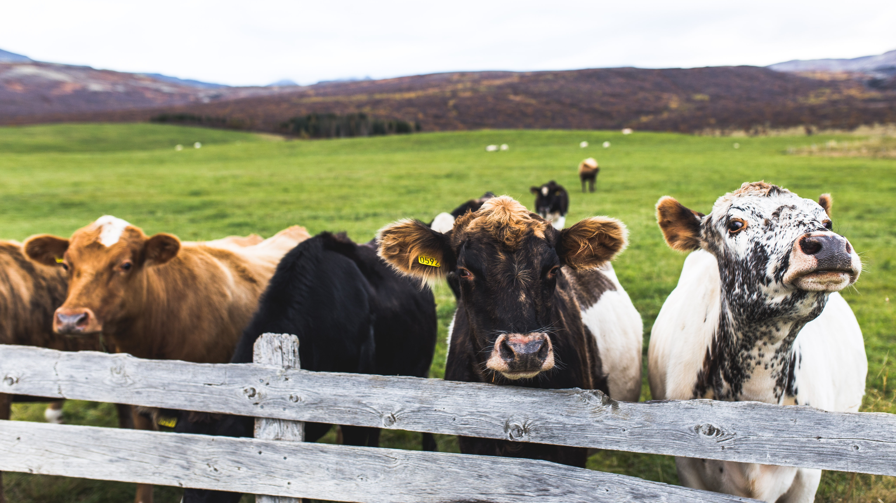

Politics & Economy
Politics: Government
The Republic of Ireland is a parliamentary democracy with a written constitution and a popularly elected president who has mostly ceremonial powers. The Irish government is headed by the Taoiseach, who is appointed by the President after being nominated by the lower house of parliament, the Dáil. Members of the government are chosen from both the Dáil and the Seanad.
Economy: Agriculture and Tourism
Ireland's economy is a modern knowledge economy which focuses on services and high-tech industries. It depends on trade, industry and investment. Agriculture has provided Ireland with food and income for thousands of years. Before Ireland became a member of the EU, the country was almost totally dependent on farming. The farming sector is still important to Ireland's economy. Agri-food is Ireland's most important indigenous sector, employing 8.6% of the working population. Tourism is one of the biggest contributors to the Irish economy. Dublin is the most heavily touristed region and it is home to some of the most popular attractions in Ireland. The west and south-west are also popular tourist destinations. About €5 billion in revenue is made each year from economic activities related to tourism. This accounts for about 4% of the Gross National Product(GNP), employing over 200,000 people.
